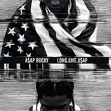

Rakim Athelaston Mayers, A$AP Rocky
"Man gave us laws, and God gave us time,
It's the art of storytelling and I'm only telling mine."

-
Birth: Rakim Mayers was born on October 3, 1988, in the Harlem neighborhood of Manhattan, New York City.
-
Career Beginnings: In 2007, A$AP Rocky joined the A$AP Mob crew, a Harlem-based collective of rappers, producers, music video directors, fashion designers, and bikers who shared similar interests in music, fashion, style, and art. This was his debut to rapping mainstream.
-
First Album: On January 13, 2013 Rocky recorded his debut studio album Long. Live. A$AP, along with several producers, such as Clams Casino, Hit-Boy, Friendzone, A$AP Ty Beats, Soufein3000 and Joey Fat Beats. It is also his best album, based on popularity and high ranking on the Billboard.
 -
Recent Album:: On May 25, 2018, Rocky released Testing to generally positive reviews from critics.Testing debuted at number four on the US Billboard 200, becoming ASAP Rocky's third consecutive top-five album on the chart.

Click here for more information about A$AP Rocky: Wikipedia